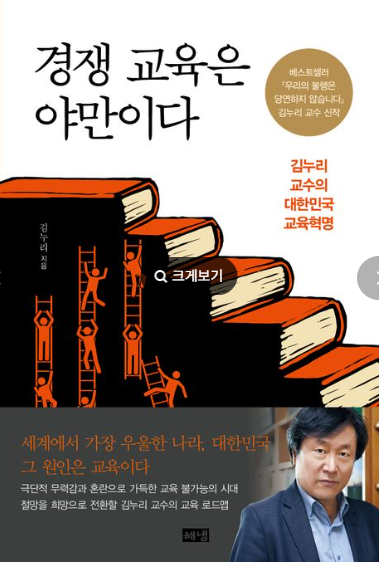
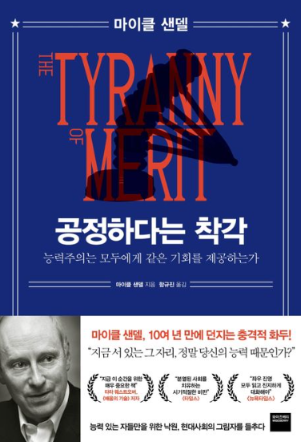
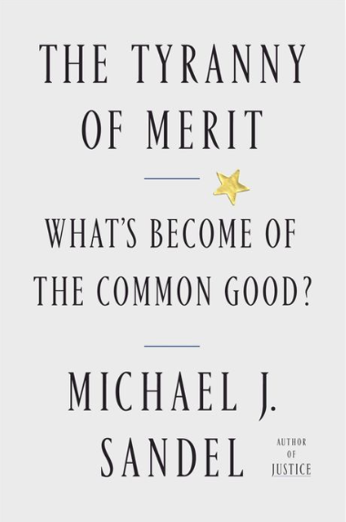

능력주의와 교사의 정치기본권,
한국 교육을 생각하며
교사노동조합연맹은 『경쟁교육은 야만이다』를 집필한 김누리 교수님을 찾아 탄핵정국 이후 우리 교육의 과제와 교사의 정치기본권에 대한 인터뷰를 진행하였습니다.
🔹 경쟁교육은 야만이다
교사노조: 한국 사회에 뿌리내린 능력주의, 어떻게 보고 계신가요?
김누리 교수: 한국은 전 세계에서 능력주의가 가장 극단적으로 실현된 나라입니다. 능력주의는 단순히 ‘실력에 따라 보상한다’는 게 아니라, 불평등을 정당화하는 수단이에요. 능력이 있다는 이유로 차별을 당연시하고, 없는 사람은 자책하게 만드는 시스템이죠.
교사노조: '야망의 트라이앵글'과 능력주의의 폐해에 대해 설명 부탁드립니다.
김누리 교수:
이데올로기라고 하는 것은 한 사회나 공동체에서 지배적인 거짓된 관념 체계예요. 모든 지배적인 사상은 지배하는 자아의 사상이거든요.
공정 이데올로기, 능력주의 이데올로기, 그리고 이것을 중심에서 딱 끌고 가는게
경쟁 이데올로기죠. 저는 이를 ‘
야만의 트라이앵글’이라고 표현해요. 능력주의가 경쟁의 결과를 정당화하고, 공정 담론이 경쟁의 과정을 합리화하죠. 이 세 가지 이데올로기가 서로를 떠받들며 한국 사회를 지배하고 있습니다.
한국처럼 이렇게 경쟁 이데올로기가 무비판적으로 수용되는 나라는 없어요. 한국은 지금 초등학생들로도 모자라 7세 고시까지 한다는 거 아니에요. 무한 경쟁으로가며 이것이 가져오는 폐해는 상상을 초월할 겁니다. 사실은 중세 때는 경쟁하는 자들은 전부 사법 처리의 대상들이었어요. 길드 조직 안에서는 (경쟁은) 사형에 처하는 가장 반사회적인 범죄였어요. 같이 협력하고 연대 해야지요. 근데 이게 자본주의로 넘어오면서, 자본주의는 경쟁이 가져오는 효율성을 극대화시키는 체제지요. 그러다 보니까 경쟁이라는 게 극단화된 거고 이것이 가지고 있는 문제들을 다 인식하기 때문에 이것을 완화시키는 많은 제도들도 같이 왔죠. 한국처럼 이렇게 야만적으로 경쟁을 시킨 나라는 지구상에 없어요.

"영국 옥스퍼드 대학의 데이비드 콜먼 교수도 한국을 '인구 소멸 국가 1호'로 지목했습니다. 그도 초저출산의 원인으로 높은 경쟁 압력, 고용•주거•양육 불안, 가부장적 가족 문화, 낮은 성평등 의식, 비혼 동거문화와 출산에 대한 폐쇄성 등을 들고 있지만, 그중에서 경쟁 압력을 가장 중요한 요인으로 보고 있습니다.”
김누리. (2024). 경쟁교육은 야만이다. 해냄. pp.8.
⛓️💥능력주의는 폭군이다
그다음에 능력주의 또 공정 이것도 어마어마하게 끔찍한 이데올로기예요.
마이클 샌델의 『공정하다는 착각』 읽어보셨나요? 그게 원래 제목은
『능력주의는 폭군이다』예요. 원래 제목은 아주 도발적이죠. 우리는 능력주의가 너무나 당연하고 심지어 긍정적인 가치라고 생각하는데, 사실 능력주의는 아주 끝없이 오만한 엘리트들을 만들어냈요. '내가 이렇게 된 건 내 능력이야. 내 아버지 핏줄로 된 게 아니야'라는 식으로 정당화하니까 오만한 인간이 되는 거죠. 아주 오만하기 이를 데 없는 엘리트들은 자기들이 '하버드 나왔다, 예일 나왔다' 하면 이걸로 뭐 자신들이 행사하는 권력이 정당화된다고 보는 거고, 우리 한국이랑 똑같죠.
미국의 경우 트럼프 현상을 생각해봐야 해요. 트럼프 현상은 결국은 신자유주의 세계화라는 게 소위 능력주의에 의해서 지배하는 엘리트들 그들이 세계화의 승자고 대다수의 하청 노동자들이 세계화의 패자가 된 거 아니에요. 그들의 반란이라는 거예요. 그래서 능력주의라는 것이 미국 사회에서 오만하기 이를 데 없는 엘리트들과 그들을 보면서 굴욕감을 느끼는 대중들로 미국 사회를 완전히 양분화했고, 이 대중들의 반란이 트럼프 현상이라는 거죠. 지금 한국도 똑같이 서울대라는 것이 그런 역할을 하는 거예요.
지금 한국은 이 능력주의가 극단적으로 전 세계에서 가장 심각한 나라죠. 한 대학을 나온 아이들이 한 사회 한 국가의 최고위층 90%를 점한 나라 한국밖에 없어요. 지금 위로 올라갈수록 지금 헌법재판소 재판관도 대다수가 서울법대 아이들일 거예요. 이런 나라는 어디에도 없어요. 이게 너무 극단적으로 되니까 그들은 다른 인종처럼 됐어요. 얼마 전에 경희대 김종영 교수랑 얘기했더니, 김종영 교수는 이건 한국형 인종주의라는 거예요. 서울 법대 나온 아이들은 자기들이 다른 인종이라고 생각한다는 거죠. 대중들을 깔보면서. 지금 헌재의 행태도 저는 그 일부라고 봐요.
⛓️💥한국과 미국의 공통점
이 능력주의라는 게 미국 사회를 절망 사회로 만들었어요. 미국 사회에서는 너무나 많은 사람들이 자살을 해요. 그 자살의 원인 능력주의에 있다는 거예요. 왜 그렇겠어요? 우리도 똑같아요. 우리도 지금 능력주의 때문에 극단적 선택을 해요. 그러니까 한국인들은 자신이 느끼는 불행의 원인을 한국의 아주 약탈적인 자본주의에서 찾지 않아요. 자신의 능력 없음에서 찾아요. 능력주의가 그들에게 주입한 이데올로기죠. 한국 자본주의의 약탈성에서 한국인들의 불행이 비롯되는데도 불구하고, '내가 능력이 없어서 이 불행을 감수한다' 라고 받아들이도록 해요. 한국과 미국에서 자살률이 가장 높은 이유는 바로 능력주의 때문이에요. (마이클) 샌델이 그렇게 분석하고 있어요.
⛓️💥능력주의가 노동의 존엄을 파괴한다
센델은 능력주의가 노동의 존엄을 파괴한다고도 해요. 과거에는 사회적으로 정말 중요한 노동들 아픈 사람 돌봐주고 치료해 주고 물건 날라주고 거리를 깨끗하게 청소해 주고 건물을 짓고 이런 사회적 노동을 하는 사람을 사회적으로 인정하고 의미 있는 일로 평가해 주고 존중했어요. 대우를 충분히 못했더라도 말이죠. 근데 언제부턴가 그런 일을 하는 사람들을 무시하고 경멸하고, '능력 없으니까 저 일하지'라고 하는 풍조가 생겼잖아요? 한국과 미국이 너무 똑같은 거예요. 그걸 샌델 교수는 능력주의가 노동의 존엄을 파괴했다고 본거죠. 대단한 분석이에요. 능력주의가 배태한 문제들이죠.
그러나 이런 이야기를 듣기 전에는 다들 '능력주의가 왜 문제지?'라고 생각한단 말이에요. 이게 이데올로기의 힘인 거죠. 공정도 마찬가지예요. 그러니까 이건 좀 성찰하는 힘이 있어야 하는데, 정치인들은 관심이 없죠. 끊임없이 기존의 이데올로기에 기생해서 권력을 늘리려고 하죠. 그래서 저는 그런 공부들이 필요하다고 봐요. 독일에서는 그런 게 이데올로기 비판 교육인데, 이게 가장 중요한 교육이에요. 아이들이 스스로 권력의 작동 방식에 대한 성찰적 지혜를 가져야 된다는 거죠.
앞으로 우리도 그렇게 가야죠. 지금 우리 교실처럼 이렇게 성찰이 없는 교실이 어디 있어요? (지금의 교육은 아이들에게) 정답을 줘요. 전부 이 시대를 지배하는 저 야만인들이 만들어 놓은 정답들인데, 그걸 외운다는 게 말이 되냐고요. 사실은 그러니까 근본적인 문제 제기가 좀 필요하다고 보는 거예요.
교육은 이 야만의 삼각형을 해체할 유일한 출발점이에요. 야만의 트라이앵글을 깨지 않으면 한국 사회는 미래가 없어요. 지금의 교육은 단지 등수를 매기고, 서열을 나누는 시스템이에요. 서울대 법대 출신들이 사회에서 보이는 비윤리성과 미성숙함은, 이 교육 체제의 산물입니다. 성숙한 인간을 키우지 못하는 교육은 결국 야만을 재생산합니다.
🔹 교사 출신 국회의원 OECD 평균 30명, 한국은?
교사노조: 교사의 정치 참여에 대해서 어떻게 생각하시나요?
김누리 교수: 교사는 어느 나라에서나 가장 큰 지식인 집단입니다. 단순히 교실 안의 존재가 아니라, 사회 전체의 윤리를 자극하고 움직일 수 있는 중요한 주체예요. 그런데 한국에서는 교사들의 정치기본권이 법적으로 제한되어 있죠. 이건 군사 독재 체제에서 만들어진 유산인데, 지금까지도 유지되고 있다는 건 심각한 문제입니다. 교사들의 국회 점유 비율이 높고 역할이 많을수록 더 성숙한 복지 국가예요. 스칸디나비아 국가들이 그 예죠. 뿐만 아니라 독일 같은 경우에도 현직 교사들이 한두텀 정도 독일연방 의회에 가서 법안을 만들어요. 현장에 있는 사람들이 가장 문제를 잘 알잖아요? 거기에 맞는 법안을 만드는거죠. 독일 교사들은 그걸 가장 영예롭게 생각하고 일종의 봉사를 하고 교단으로 돌아간다는 인식이죠.
저는 (한국에서) 교사의 탈정치라는 말을 듣고 정말 놀랐어요. 탈정치라는 말이 어떻게 성립될 수 있을까요? 교사는 탈정치해야 한다는 주장이야말로 가장 정치적인 주장이에요. 교사들이 여의도를 둘러싸고 있어서는 안 되죠. 여의도 안에 들어가 있어야죠. OECD평균이 30명인데, 최소 그 정도는 (여의도에) 들어가 있어야죠. 독일연방의회 구성원 직업군 중 가장 많은게 법률가고 그 다음이 교사예요. 13%정도죠. 교사들이 그 사회에서 국회의원으로 많이 들어간다는 건 그만큼 의회 자체가 보다 지적이고 윤리적이 된다는 이야기죠.
교사노조: 대중의 거부감에 대해서는 어떻게 보시나요? 대중의 거부감 때문에 '정치기본권' 대신 '시민적 기본권'을 요구하자는 의견도 있거든요.
김누리 교수: ‘정치기본권’이라는 단어에 부담을 느낄 수도 있지만, 이를 ‘시민적 기본권’으로 대체하면 오히려 그 의미가 옅어질 수 있어요. 중요한 건 용어보다 실질적 권리의 회복입니다. 교사들이 제대로 된 권리를 보장받을 때, 교육도 바뀌고 사회도 성숙할 수 있죠. 한국은 1963년에 군사독재 당시 가장 강력한 지식인 집단이었던 교사의 입을 봉쇄하려고 교사의 정치적 중립을 강조했고, 그게 지금까지 내려오는 상황이에요. 62년 동안요.
사실 우리 사회가 어떤 분야는 굉장히 최첨단을 달리지만 또 어떤 분야는 전혀 변하지 않았어요. 완전히 다른 시대가 같이 있는 비동시성의 동시성이죠. 대표적인 것이 교육과 교사죠. 다른 OECD 국가들은 어떤 상황인지 통계 등을 통해서 봐야해요. 실태를 알리고 논쟁을 촉발해 변화로 이어가야죠. 교사들은 현장을 가장 잘 아는 사람들입니다. 이들이 정책 결정 과정에 참여하고 목소리를 낼 수 있어야 진짜 의미 있는 교육 개혁이 가능하죠. 단순히 ‘중립’을 강요해서는 안 되고, 정치 참여 자체를 시민의 기본권으로 보장해야 합니다.


“좋은 통치는 실천적 지혜와 시민적 덕성을 필요로 한다. 공동선에 대해 숙고하고 그것을 효과적으로 추구할 수 있는 능력이다. 그러나 둘 중 어느 것도 오늘날 대부분의 대학에서는 함양될 수 없다. 최고의 명문대라고 할지라도 말이다. 그리고 최근의 역사적 경험은 도덕적 인성과 통찰력을 필요로 하는 정치 판단 능력과 표준화된 시험에서 점수를 잘 따고 명문대를 들어가는 능력 사이에 별 연관성이 없음을 보여준다. '최고의 인재들'이 저학력자 동료 시민들보다 통치를 잘한다는 생각은 능력주의적 오만에서 비롯된 신화일 뿐이다.”
마이클 샌델. (2020). 공정하다는 착각: 능력주의는 모두에게 같은 기회를 제공하는가. 와이즈베리. pp.171.